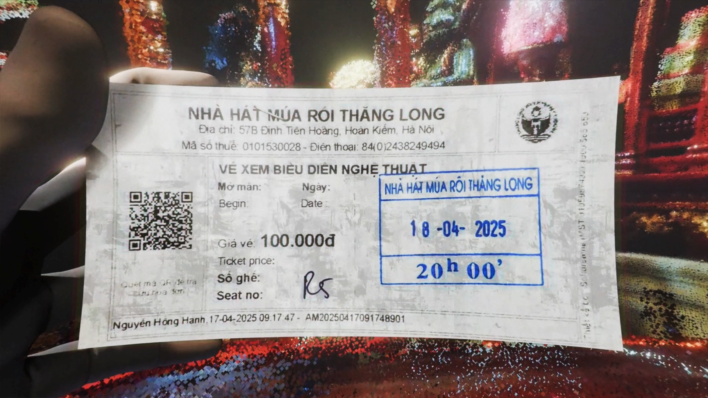
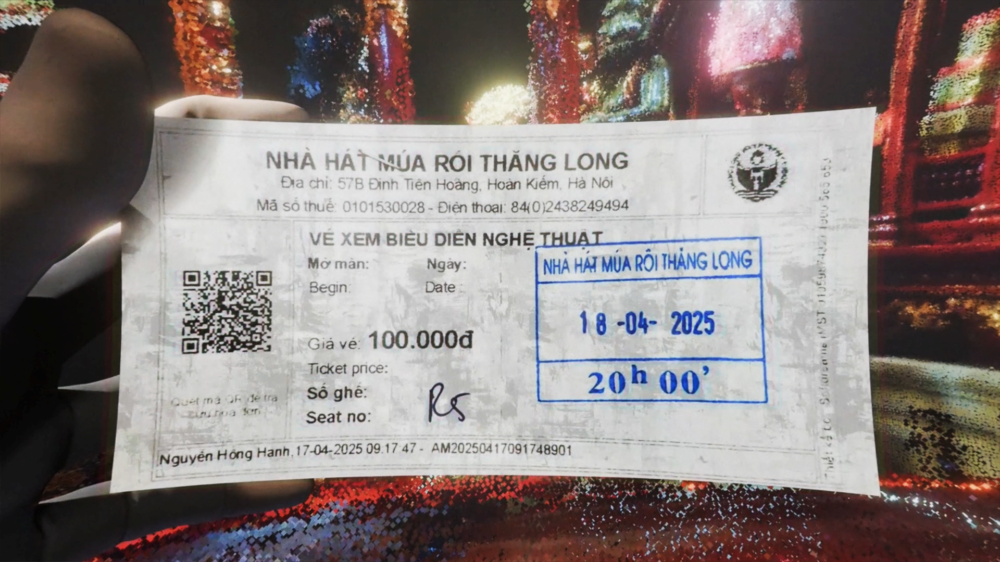

Nuoc Mong
Where Tradition Meets Innovation – You're in Control
Uncover the vibrant tapestry of Vietnamese heritage, where centuries-old traditions come to life with stunning precision. All from the comfort of your PC.
Add to Collection on Itch.ioScreenshots


 



Watch the Trailer
[Embed your main trailer here.]
Discover an Enchanting World
Nuoc Mong is an immersive, interactive experience that reimagines the timeless art of Vietnamese water puppetry, blending tradition with cutting-edge technology. Players step into the heart of the story, actively participating in key moments where their actions shape the narrative. As the game unfolds, users must engage with the vibrant world of Vietnamese folklore through hand-tracking controls, guiding puppet movements, manipulating lighting, and influencing the story's direction. Far from being passive spectators, players become vital parts of the performance, bringing the rich cultural tapestry of Vietnam to life in a dynamic and personal way.
Key Features
Intuitive Hand Controls
[Briefly describe how hand interaction works.]
Authentic Water Puppetry
[Mention the inspiration and unique art form.]
[Another Key Feature]
[Briefly describe another selling point - story, atmosphere, etc.]
About The Game
[Detailed Description Subheading]
[Expand on the game's concept, setting, story. What is the player's goal or experience?]
[Gameplay Mechanics Subheading]
[Explain how the hand interaction works in more detail. What can players do? How does it connect to the puppetry?]
[World & Art Style Subheading]
[Talk about the inspiration (Vietnamese water puppetry), the visual aesthetic, the mood, the audio experience.]
Join the Community
Connect with us and other players! Follow our development journey on Itch.io and social media.